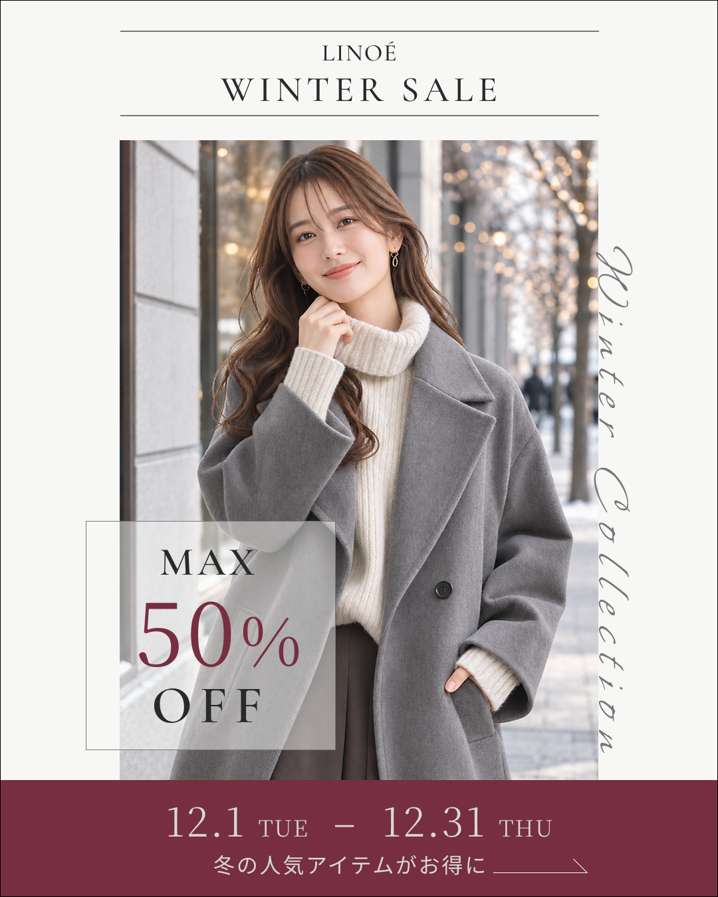

WORK

LINOÉ｜WINTER SALE バナー
DESIGN
レディースアパレルブランドのウィンターセール告知バナー（自主制作）
- 目的
- 冬物アイテムのセールを告知し、商品の購買意欲を高め、ECサイトへのアクセスを促すことを目的に制作しました。
- ターゲット
- 25〜40代の女性。
上品で洗練された、大人のファッションを好む方を想定しています。 - 工夫した点
- グレーとホワイトを基調とし、ボルドーをアクセントカラーに取り入れることで、ブランドの上品さとセールの特別感を両立させました。
セリフ体と繊細な筆記体を組み合わせ、余白を生かしたファッション誌のようなデザインに仕上げています。 - 制作期間
- 3日間
- 使用言語・ツール
- Figma
chatGPT(画像生成)